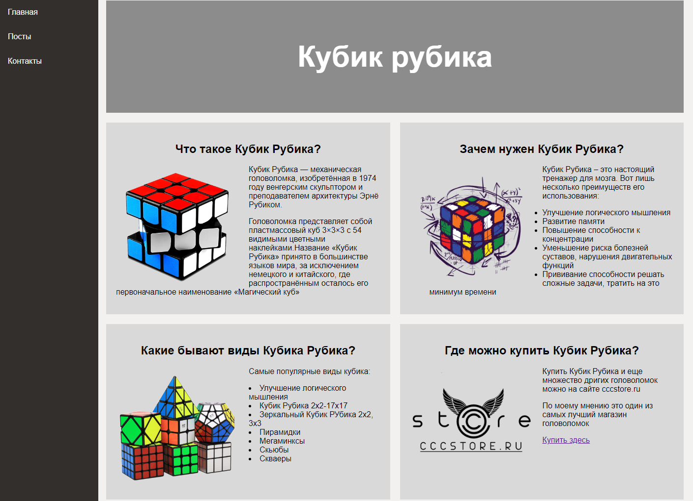
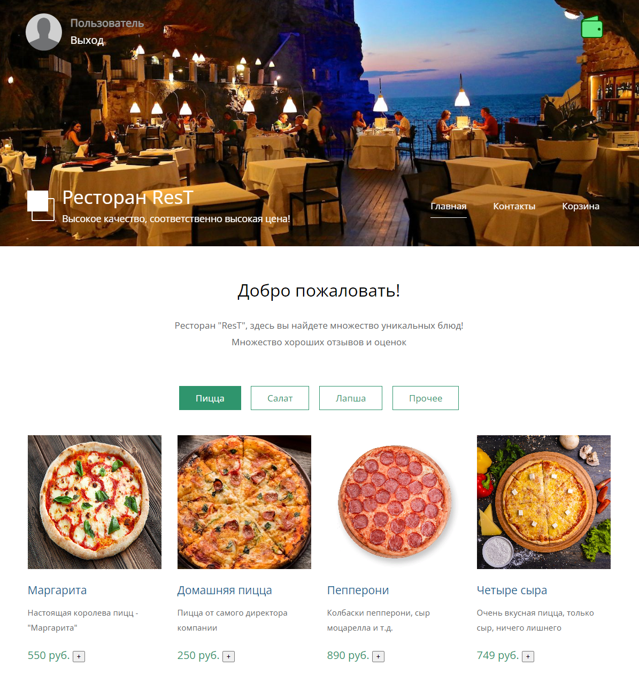

Рады приветствовать вас на вики-проекте, посвящённом различным играм. Здесь будет базовая информация о играх, некоторые фишки, баги, пасхалки и многое другое!
Projects

Блог про кубик Рубика
Небольшой блог про кубик рубика. Один из самых первый проектов. В нем рассказывается про то, что такое кубик Рубика, зачем он нужен, какие бывают виды и в каком магазине купить(не реклама). Также на сайте присутствует контактная информация.
(К сожалению, ссылки нет)

Сайт-ресторан
На данном сайте можно "заказать" любое блюдо на выбор, всего блюд 16. На сайте присутствует система регистрации пользователя и система пополнения баланса(Ну, если честно, она еще в разработке).
(К сожалению, ссылки нет)